本章系统介绍车削、钻削、刨削、铣削、磨削等传统加工方法，以及电火花、电解、超声、激光等特种加工技术，并讨论零件表面加工方法的选择原则。
第14章 · 工程材料与机械制造基础（第3版）
CUTTING METHODS
车削加工：工件旋转为主运动，刀具直线进给。加工各种回转面——外圆、内孔、锥面、螺纹等。
① 位置精度高：各表面绕同一回转轴线，相对位置易于保证。
② 切削平稳：连续切削，无冲击振动，可高速或强力切削。
③ 精加工有色金属：有色金属不宜磨削（砂轮堵塞），用车削精加工。车削可达IT8~IT7，Ra 1.6~0.8μm。
① 宽刀法：主刀刃与工件轴线夹角=锥面斜角α，径向进给。适用于短锥面。
② 小刀架转位法：小刀架转α角，手动进给。适用于各种锥面，但手动操作。
③ 偏移尾架法：尾架偏移距离s，使工件母线平行于纵向进给。适用于长锥面。
④ 靠模法：靠模板调成α角，车刀沿靠模板移动。适用于批量化生产。
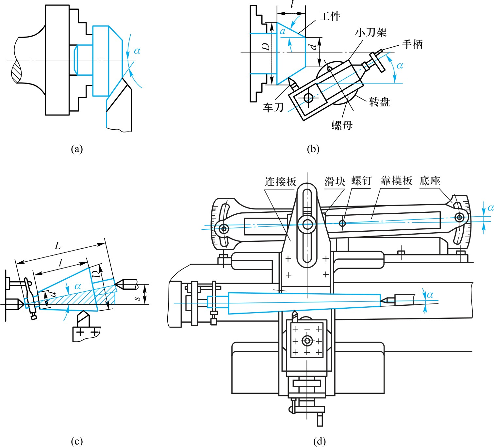
车成形面：双手同时操作法（纵横向合成运动）、成形车刀法（刀刃与母线吻合）、靠模法。
车螺纹：螺纹截面形状由车刀保证（刀刃与螺纹截面吻合），螺距由传动系统保证（工件转一圈→刀具移动一个导程）。
其他螺纹加工方法：攻螺纹、套螺纹、铣/磨/滚压螺纹。
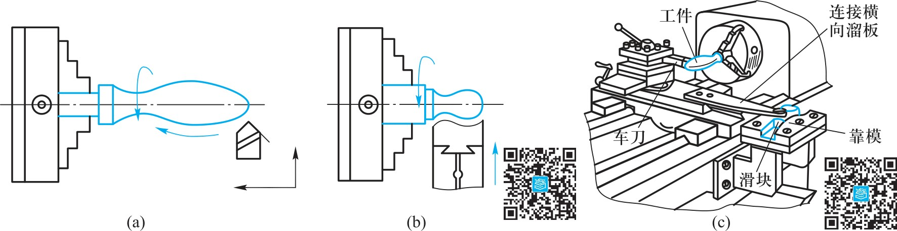
钻削是孔加工的基本方法。钻头旋转为主运动，轴向移动为进给运动。
麻花钻：由夹持部和工作部组成。两条对称螺旋槽→形成切削刃及前角、排屑、输送切削液。
钻孔的工艺特点：①钻头易引偏（横刃→轴向力大、刚性差、导向差）；②排屑困难（切屑宽、容屑空间小）；③切削热不易传散（半封闭切削）。
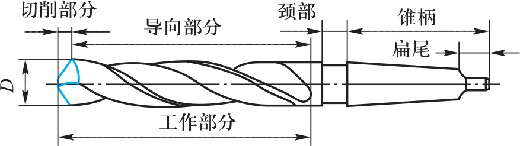
麻花钻切削部分：两条主切削刃 + 两条副切削刃 + 一条横刃。
横刃长且负前角大→难定心→易引偏。
修磨措施：预钻锥形定心坑、采用钻套导向、对称修磨两主切削刃。修磨横刃→变短、前角增大。
钻床上引偏→孔轴线偏斜（孔径不变）；车床上引偏→孔径变化（锥形或腰鼓形）。
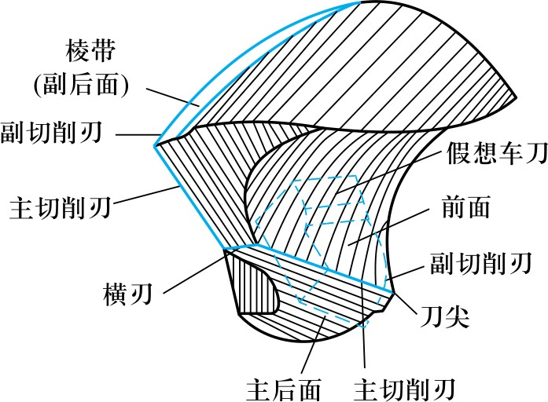
扩孔：用扩孔钻对已有孔进行扩大。扩孔钻无横刃、刀齿多(3~4个)、导向好。可达IT10~IT9，Ra 6.3~3.2μm。
铰孔：用铰刀对未淬硬孔精加工。刀齿更多、有修光部分、切削速度低。可达IT8~IT7，Ra 3.2~0.4μm。
中、小尺寸孔常用工艺路线：钻→扩→铰（使用标准刀具）。
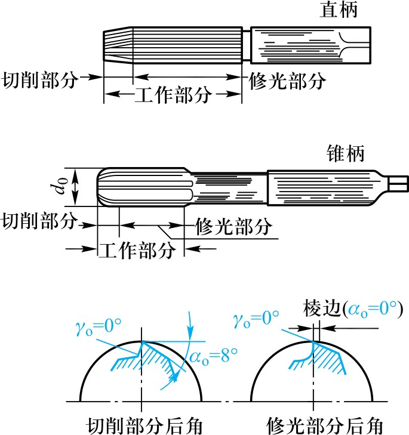
镗削：用镗刀对已有孔加工。主要在镗床上加工箱体、机架等大型/复杂零件的孔系。
单刃镗刀：结构简单，可校正原有孔的轴线歪斜。适用于单件小批。
可调浮动镗刀（多刃）：对称切削刃自动平衡，精度高、效率高。但不能校正孔轴线的歪斜。
工艺特点：加工范围广、精度高（可达IT7~IT6，Ra 0.8~0.2μm）、但生产率较低、调整复杂。
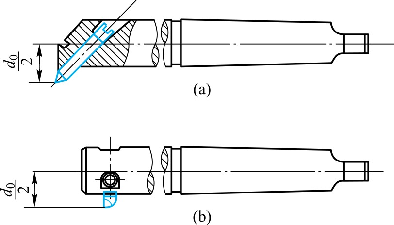
刨削：刨刀往复直线运动（主运动），工件间歇进给。牛头刨床（中小件）、龙门刨床（大型件）。
工艺特点：①机床与刀具简单，通用性好；②刨削精度低（有冲击振动）→IT8~IT7，Ra 2.3~1.6μm；③有空行程，生产率低。
插削：立式牛头刨床，滑枕带动插刀上下往复。主要用于加工内表面——方孔、多边形孔、孔内键槽等。
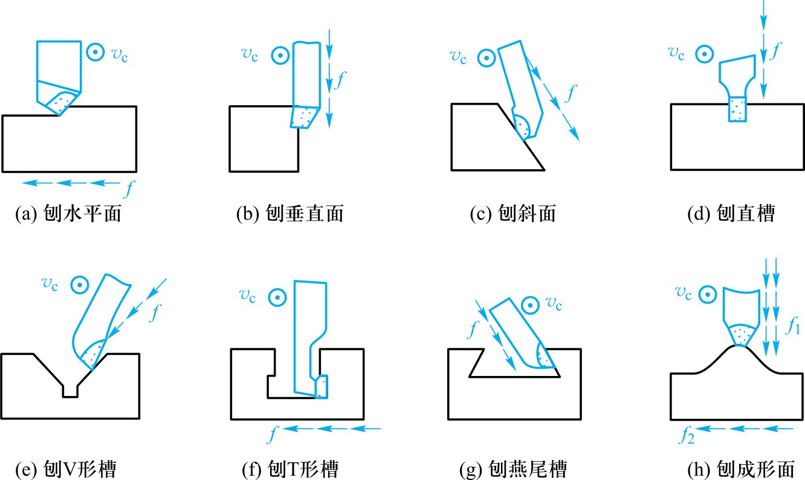
拉削：用拉刀加工——高生产率、高精度。拉刀是多刃刀具，一次行程完成粗切→半精切→精切→校正→修光。
工艺特点：①生产率高；②精度高（IT8~IT7，Ra 0.8~0.4μm）；③拉刀寿命长（速度低、磨损慢）；④拉刀制造成本高。
主要加工各种通孔（圆孔/方孔/多边形孔/内齿轮）和沟槽（键槽/T形槽/燕尾槽）。不能加工盲孔、深孔、阶梯孔。
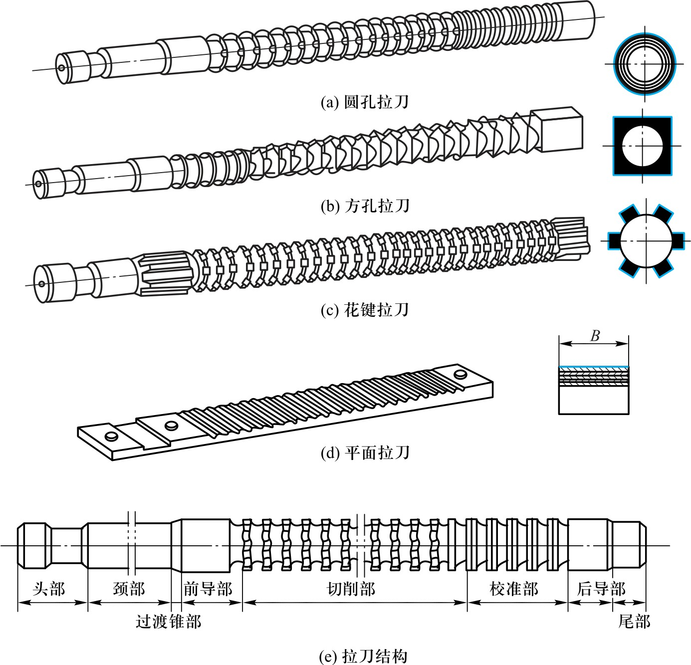
铣削：铣刀回转（主运动），工件直线/曲线进给。可加工平面、沟槽、齿轮、成形面等。
端铣：用铣刀端面齿切削。周铣：用铣刀圆周齿切削。
端铣优于周铣：①更多刀齿同时切削，更平稳，可大用量→生产率高；②副切削刃修光已加工表面→Ra更小。
周铣优势：适应性更强（可铣平面、沟槽、齿形、成形面等）。大平面→端铣；小平面/沟槽/成形面→周铣。
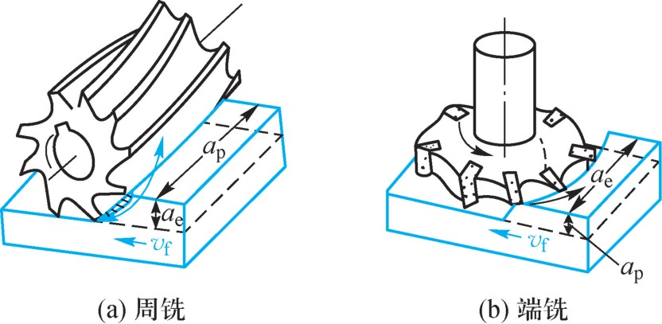
逆铣：铣刀旋转方向与工件进给方向相反。切削厚度从零→最大，切削刃在工件表面滑行→加剧磨损、冷作硬化。
顺铣：方向相同。厚度从最大→零，无滑行→刀具磨损小、表面质量好。竖直分力有助于压紧工件。
顺铣的风险：水平分力方向与进给相同，会拉动工作台窜动（丝杠螺母间隙）。
选用：无硬皮工件+有消除间隙装置→顺铣；反之→逆铣。
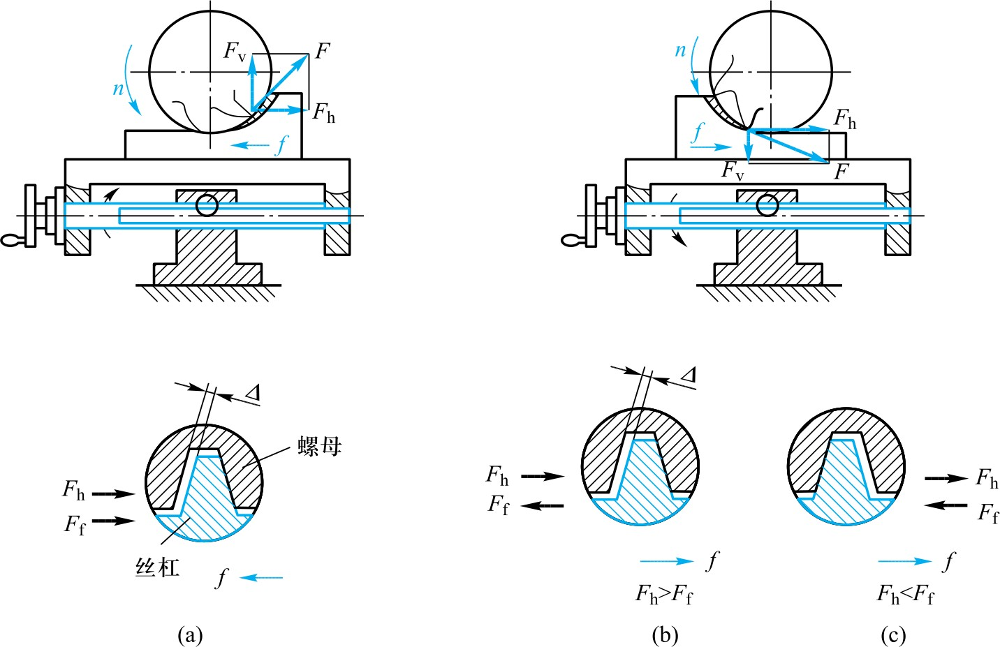
磨削：砂轮高速旋转（主运动），工件旋转（圆周进给）+往复直线（纵向进给）。
纵磨法：每次磨削量小，多次往复切除。磨削力小、发热少、精度高。广泛用于单件小批、细长轴。
横磨法（切入磨）：工件不纵向移动，砂轮连续横向进给。生产率高，适合大批量、成形表面。
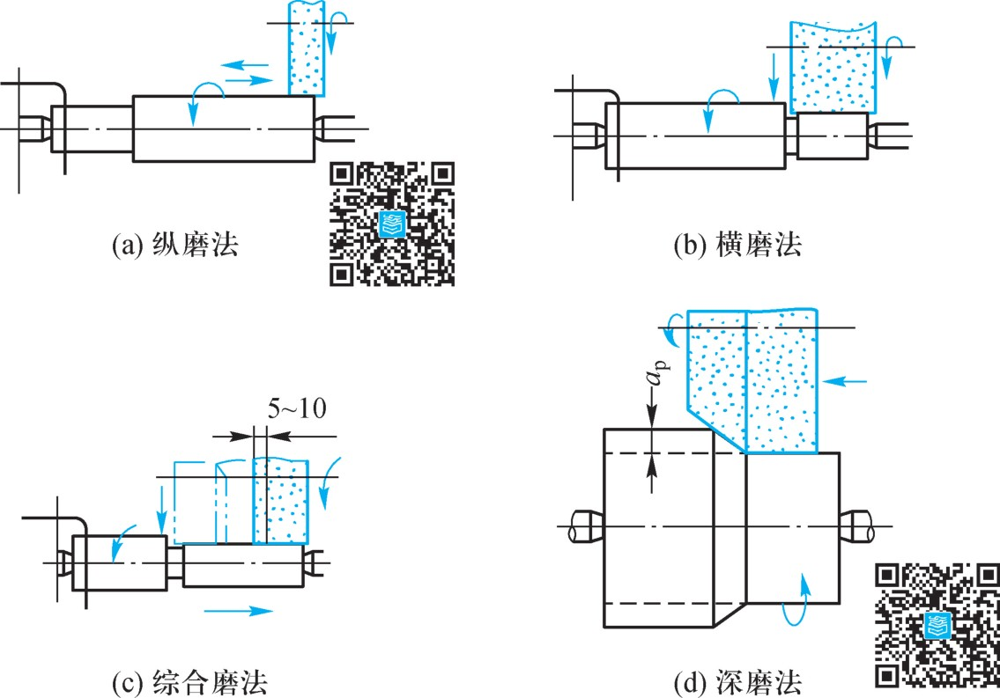
① 精度高、Ra小：磨粒刃口半径小、磨粒多、速度高(30~35m/s)。可达IT8~IT5，Ra 1.6~0.2μm。
② 径向分力F_y大：磨削时砂轮与工件接触宽度大，磨粒切削能力较差→F_y大（不同于车削时F_z最大）。
③ 磨削温度高：摩擦严重、砂轮导热差→磨削区温度达800~1000°C→必须充分浇注磨削液。
④ 砂轮自锐性：钝化磨粒在磨削力下自行脱落，露出新磨粒——其他刀具不具备的特性。
研磨：研具与工件之间施以研磨剂，在压力下作复杂相对运动，切除极薄层材料。
研具材料：比工件软（铸铁最常用），使磨粒能嵌入研具表面进行切削。
特点：①应用广泛（平面、圆柱面、螺纹、齿轮等均可）；②精度IT5~IT3，Ra 0.1~0.008μm；③生产率低（余量仅0.01~0.03mm）。
适用：精密量块、量规、喷油嘴、半导体晶体、光学镜头等。
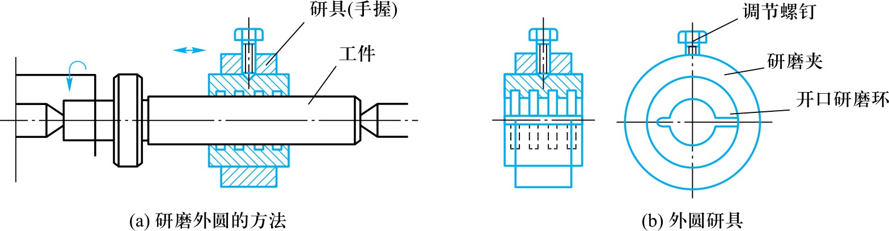
珩磨：珩磨头上的油石以一定压力压在被加工表面，旋转+往复运动→交叉网纹（利于油膜形成→耐磨损）。
生产率较高（多个油石同时工作），精度IT6~IT4，Ra 0.2~0.05μm。主要用于孔的精密加工（φ5~500mm）。
抛光：高速旋转的抛光轮+磨膏，对工件表面光整加工。
抛光简便经济，能加工曲面，Ra可达0.1~0.012μm。但不能保持或提高原加工精度——只是去掉前道工序痕迹。
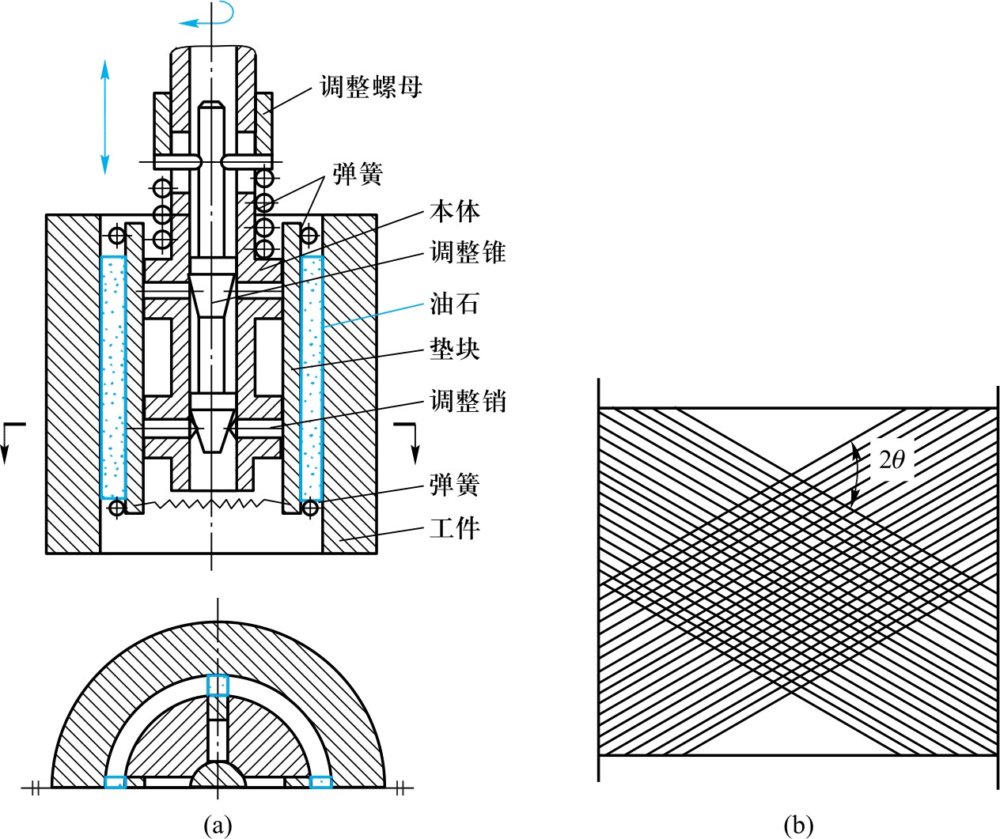
NON-TRADITIONAL MACHINING
为什么要特种加工？传统切削加工依赖刀具硬度>工件硬度，但面对高硬度、高强度、高韧性、复杂形状时力不从心。
特种加工的共同特点：①不依赖刀具硬度；②工具与工件之间无明显切削力；③加工能量形式多样（电、热、声、光、化学等）。
本章介绍四种常用方法：电火花加工、电解加工、超声加工、激光加工。
原理：工具电极与工件间脉冲放电，产生局部高温(>10000°C)使金属熔化/气化。
条件：①电极与工件间保持间隙(0.01~0.05mm)；②绝缘工作液（煤油/去离子水）；③脉冲电源。
应用：型腔加工（模具型腔）、穿孔加工（微细孔φ0.01mm）、线切割（精密轮廓切割）。
特点：可加工任何导电材料（硬质合金/淬硬钢），无宏观切削力，但加工速度慢、有电极损耗。
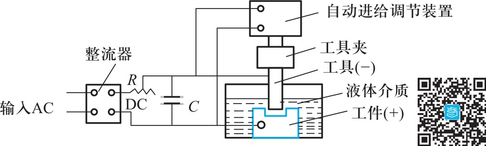
原理：工件为阳极，工具为阴极，在电解液中通过大电流，阳极金属溶解，实现材料去除。
特点：①加工速度高（比EDM快5~10倍）；②工具无损耗（阴极不溶解）；③表面质量好（Ra 0.4~0.1μm）。
应用：整体叶轮、炮管膛线、模具型腔等复杂型面的大批量生产。
局限性：只能加工导电材料、电解液腐蚀性强需防护。
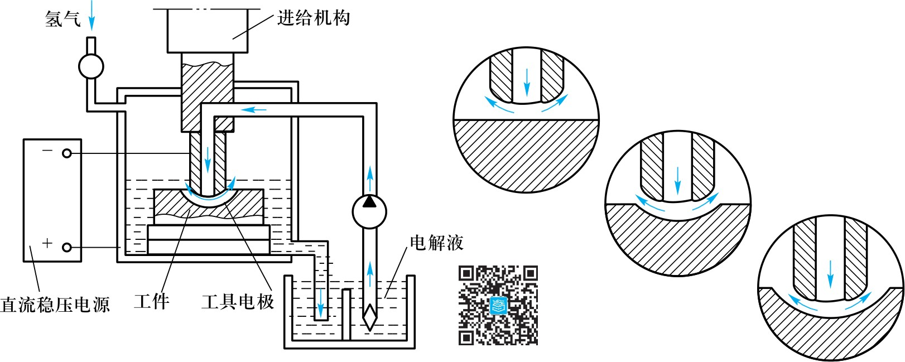
超声加工：超声振动(16~25kHz)使工具端部磨料液冲击工件表面→磨料锤击去除材料。
特点：不依赖材料导电性——可加工玻璃、陶瓷、半导体、宝石等脆硬材料。型孔/型腔/切割单晶硅片。
激光加工：聚焦激光束（高能量密度→瞬间熔化和气化）。
特点：可加工任何材料（金属/非金属）、加工速度快、热影响区小、无接触力、可远距离传输。用于打孔/切割/焊接/标记。
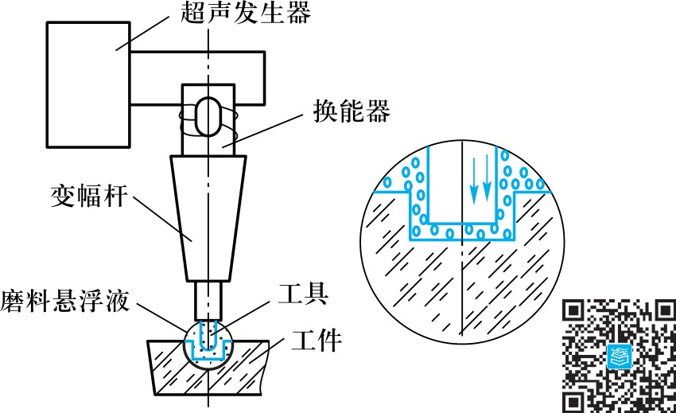
SELECTION OF MACHINING METHODS
① 零件的材料性能——硬度/塑性/脆性决定可加工性。硬脆→磨削/特种加工；塑性→车铣刨拉。
② 加工精度和表面粗糙度要求——粗/半精/精/精密各阶段选择不同方法。
③ 零件的结构形状和尺寸——外圆/内孔/平面/螺纹/齿形各有典型加工方法。
④ 生产批量——单件（通用设备）vs 大批量（专用设备/自动线）。
⑤ 经济性——在满足技术要求前提下选成本最低的方法。
车螺纹：车刀刃口与螺纹截面吻合。螺距由传动系统保证（主轴→挂轮→进给箱→丝杠）。适用于各种直径和螺距。
铣螺纹：盘形或梳形铣刀加工，效率高于车削。适用于成批生产。
磨螺纹：单线或多线砂轮磨削，精度高。适用于螺纹环规/丝锥/精密丝杠。
攻丝/套丝：丝锥攻内螺纹、板牙套外螺纹。简便，适用于中、小尺寸螺纹。
滚压螺纹：无切削加工，利用塑性变形。强度高、生产率高。适用于大批量标准件。
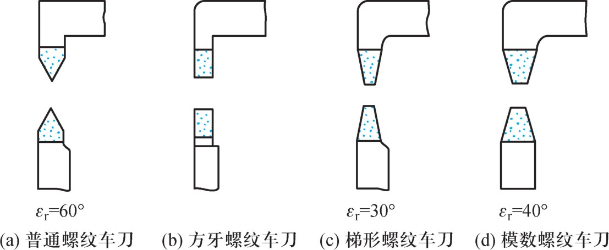
成形面：零件上非直线的母线表面（手柄/手轮/凸轮等）。根据精度和批量选择方法：
① 成形车刀/铣刀法：刀刃形状与工件母线吻合，加工后即得所需形状。效率高精度好。
② 靠模法：靠模板控制刀具或工件的运动轨迹。适用于批量生产。
③ 数控加工：编程控制刀具轨迹，灵活适应，无靠模成本。适用于各种批量。
大粗糙度要求→精加工后研磨/抛光。
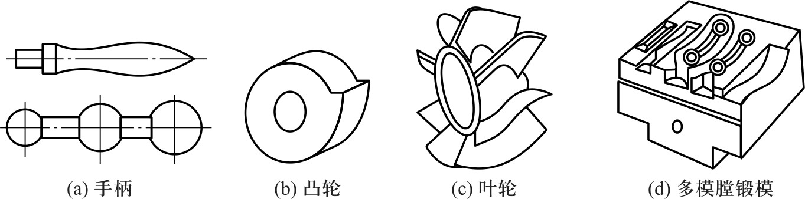
掌握各种加工方法的工艺特点、适用范围及选择原则，是合理制定零件加工工艺的基础。